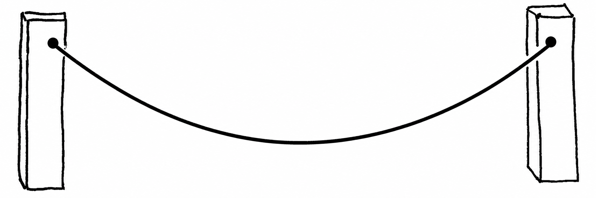
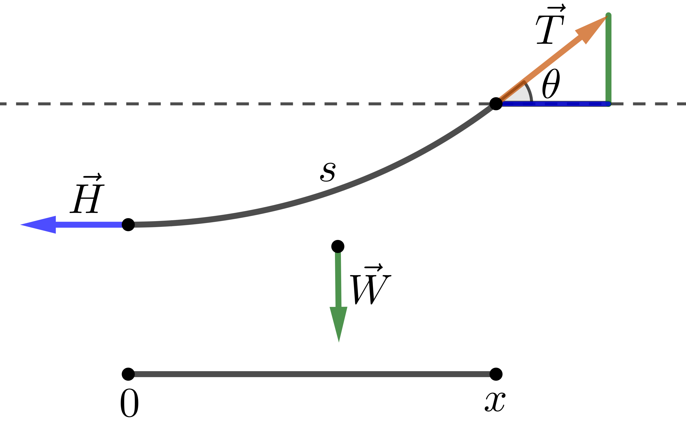

The Catenary
A chain hanging from two endpoints settles into an equilibrium position. The universal shape of the hanging chain is called the catenary.

We will use the fact that the forces on the chain at rest are balanced. This will lead us to the key mathematical property of the catenary and reveal the Calculus II function that produces it.
Let us use a coordinate system such that the \(y\)-axis passes through the lowest point on the chain. Consider a right-hand segment of the chain from the lowest point \(t=0\) to any point on the chain \(t=x>0\), making an arc of length \(s\).
The external forces acting on this chain segment must balance and sum to zero. These external forces are the horizontal tension at the lowest point \(\vec H\), pointing left; the tension \(\vec T\) at \(x\), tangent to the curve; and the downward force \(\vec W\) due to gravity acting on the entire segment.

Let \(H\), \(T\), and \(W\) denote the magnitudes of the force vectors. Balancing forces in the horizontal direction gives \(H=T\cos\theta\). Balancing forces in the vertical direction gives \(W=T\sin\theta\).
Assuming a uniform chain with constant linear mass density \(\lambda\), we can write
\[ W=mg=(\lambda s)g. \]We can now deduce the defining mathematical property of the catenary:
\[ \tan\theta = \frac{W}{H} = \frac{\lambda gs}{H} = cs, \qquad \text{where } c=\frac{\lambda g}{H}. \]The Differential Equation
Written in terms of the curve \(y(x)\), the key property becomes the differential equation
\[ y'(x) = c\int_0^x \sqrt{1+\bigl(y'(t)\bigr)^2}\,dt. \]The slope of the catenary is proportional to arc length measured from the lowest point.
It is possible to solve this differential equation directly and find that the function we are looking for is none other than the hyperbolic cosine:
\[ y(x)=\frac{1}{c}\cosh(cx). \]Since the calculus sequence does not cover differential equations, we will instead verify that the function above is a solution.
Calculus II Exercise 1: Verify that
\[ y'(x)=\sinh(cx). \]Solution:
\[ \begin{aligned} y(x) &= \frac{1}{c}\cosh(cx) \\[4pt] &= \frac{1}{c} \left( \frac{e^{cx}+e^{-cx}}{2} \right), \\[7pt] y'(x) &= \frac{1}{c} \left( \frac{ce^{cx}-ce^{-cx}}{2} \right) \\[4pt] &= \frac{e^{cx}-e^{-cx}}{2} \\[4pt] &= \sinh(cx). \end{aligned} \]Calculus II Exercise 2: Verify that the arc length of \(y(x)\) from the lowest point to \(x\) equals
\[ \int_0^x \sqrt{1+\bigl(y'(t)\bigr)^2}\,dt = \frac{1}{c}\sinh(cx). \]Solution:
\[ \begin{aligned} \int_0^x \sqrt{1+\bigl(y'(t)\bigr)^2}\,dt &= \int_0^x \sqrt{1+\sinh^2(ct)}\,dt \\[5pt] &= \int_0^x \sqrt{\cosh^2(ct)}\,dt \\[5pt] &= \int_0^x \cosh(ct)\,dt \\[5pt] &= \frac{1}{c} \int_0^{cx} \cosh u\,du \\[5pt] &= \frac{1}{c}\sinh(cx). \end{aligned} \]Therefore,
\[ c\int_0^x \sqrt{1+\bigl(y'(t)\bigr)^2}\,dt = \sinh(cx) = y'(x), \]so \(y(x)=\frac{1}{c}\cosh(cx)\) satisfies the defining differential equation of the catenary.